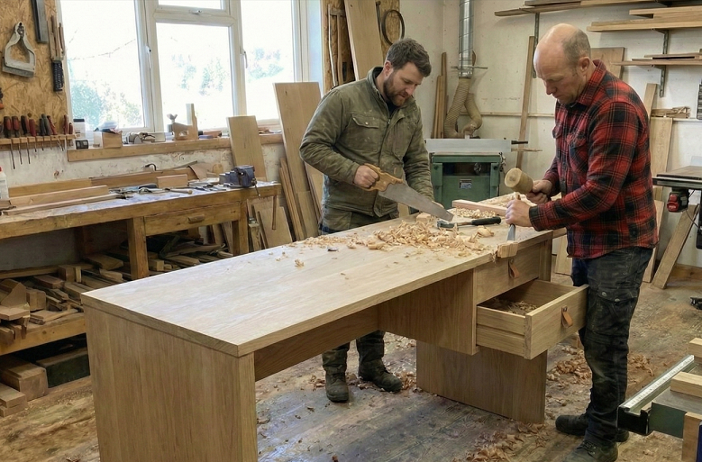

Egy olyan világban, ahol a tárgyak gyakran csak egy szezonra szólnak, és ahol a gyors megoldások felváltják a minőséget, mi hiszünk abban, hogy az otthonnak az állandóságot kell képviselnie.
Számunkra a fa nem csupán alapanyag, hanem a természet egyik legnemesebb ajándéka. Minden deszkának, minden rönknek saját története, illata és rajzolata van. Amikor Ön végighúzza kezét egy általunk készített étkezőasztalon vagy komódon, nem egy hideg ipari felületet érint, hanem a természet melegségét.
Bútorainkat úgy tervezzük, hogy azok dacoljanak az idővel. Nem a pillanatnyi trendeket kergetjük, hanem a klasszikus, időtálló formavilágot ötvözzük a modern funkcionális igényekkel. Egy Masszív Manufaktúra asztal mellett felnőhet egy generáció, a karcolások és az évek pedig nem elhasználják, hanem patinássá, éretté teszik a felületeket.
A kézművesség garanciája A "manufaktúra" szó számunkra kötelezettség. Azt jelenti: kézzel készült. Figyelünk a fa erezetének futására, a csapolások pontosságára és a felületek selymes tapintására. Nálunk a "selejt" ismeretlen fogalom, mert addig nem engedünk ki semmit a kezünkből, amíg az nem tökéletes.
Nem csupán bútorokat értékesítünk, hanem jövőbeli családi örökségeket adunk át, amelyek generációkon átívelő köteléket teremtenek. Műhelyünkben a friss forgács illata és a fűrész ritmikus hangja nem csupán munkafolyamat, hanem szenvedélyünk éneke, mely minden elkészült darabban tovább él. Kizárólag fenntartható forrásból származó faanyaggal dolgozunk, mert hisszük, hogy a természet tisztelete a hosszú életű és lelkiismeretes alkotás alapköve. Minden egyes darab megtervezésekor az Ön álmait és egyedi igényeit öntjük formába, így a végeredmény tökéletesen illeszkedik majd életteréhez és szokásaihoz.